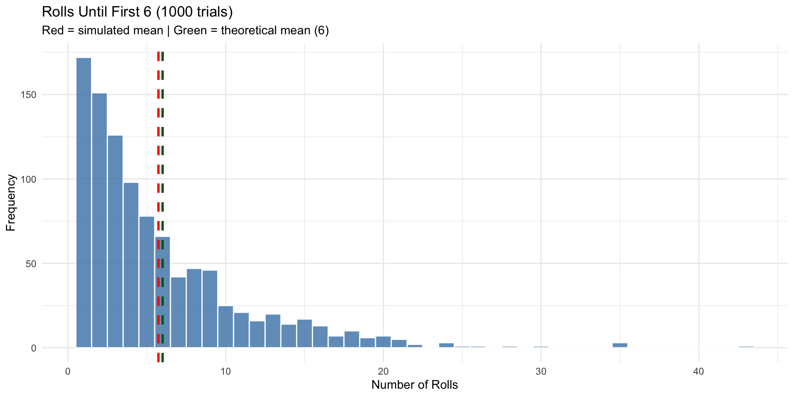
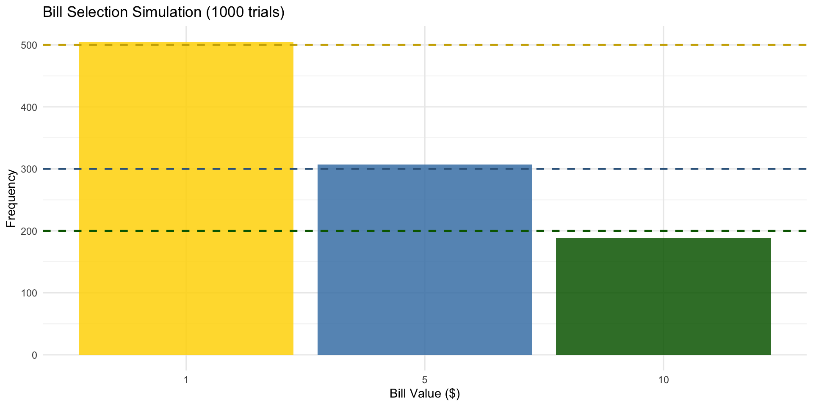

states <- c("Alabama","Alaska","Arizona","Arkansas","California",
"Colorado","Connecticut","Delaware","Florida","Georgia",
"Hawaii","Idaho","Illinois","Indiana","Iowa",
"Kansas","Kentucky","Louisiana","Maine","Maryland",
"Massachusetts","Michigan","Minnesota","Mississippi","Missouri",
"Montana","Nebraska","Nevada","New Hampshire","New Jersey",
"New Mexico","New York","North Carolina","North Dakota","Ohio",
"Oklahoma","Oregon","Pennsylvania","Rhode Island","South Carolina",
"South Dakota","Tennessee","Texas","Utah","Vermont",
"Virginia","Washington","West Virginia","Wisconsin","Wyoming")Statistics
Chapter 14: Sampling and Simulation
Yu-You Liou
Shih Chien University
2026-06-04
Chapter Overview
Why Sampling and Simulation?
When populations are too large to study completely, researchers rely on samples to draw valid inferences. And when real-world experiments are too dangerous, expensive, or time-consuming, simulation provides a safe, cost-effective alternative.
Random numbers are the engine behind both techniques.
Topics covered:
- 14-1: Common Sampling Techniques
- 14-2: Surveys and Questionnaire Design
- 14-3: Simulation Techniques and the Monte Carlo Method
Section 14-1: Common Sampling Techniques
Why Use Samples?
Three Reasons to Sample
- Saves time and money — studying an entire population is often impractical
- Enables otherwise impossible research — e.g., testing cable strength to destruction would leave nothing to sell; blood cholesterol analysis cannot use every drop
- Allows more depth — smaller samples enable more detailed interviews and richer data collection
Key requirement: A sample must be random — every member of the population must have an equal chance of selection. Random samples are unbiased; non-random samples are biased.
Four Basic Sampling Methods
Overview
| Method | Core Idea |
|---|---|
| Random | Use random numbers to select subjects |
| Systematic | Select every kth element after a random start |
| Stratified | Divide into homogeneous subgroups; sample each |
| Cluster | Select an intact, pre-existing group as the sample |
Random Sampling
Random Sampling
Each element of the population is numbered, and random numbers are used to select the sample.
Common mistakes to avoid: - Interviewing “people on the street” (coverage bias) - Phone-in polls (self-selection bias) - Mail surveys (non-response bias)
Correct method: Use a random number table or computer-generated random numbers.
Example 14-1: TV Show Interviews — Random Sample
Problem
A researcher producing a TV show can interview only 10 governors from the 50 states. Select a random sample of 10 states using a random number table.
Example 14-1: Mathematical Solution
Solution
Step 1: Number the states 01–50 alphabetically (01 = Alabama, 02 = Alaska, …, 50 = Wyoming)
Step 2: Use the random number table. Start at a chosen point and read two-digit numbers:
Selected numbers: 27, 43, 34, 06, 13, 29, 01, 39, 23, 35
(Discard numbers > 50 and duplicates; sample without replacement)
Step 3: Match to states:
| # | State | # | State | |
|---|---|---|---|---|
| 27 | Nebraska | 29 | New Hampshire | |
| 43 | Texas | 01 | Alabama | |
| 34 | North Dakota | 39 | Rhode Island | |
| 06 | Colorado | 23 | Minnesota | |
| 13 | Illinois | 35 | Ohio |
Example 14-1: R Solution
Selected state numbers: 31 15 14 3 42 43 37 48 25 26 Selected states: 03. Arizona
14. Indiana
15. Iowa
25. Missouri
26. Montana
31. New Mexico
37. Oregon
42. Tennessee
43. Texas
48. West VirginiaSystematic Sampling
Systematic Sampling
- Number all population elements
- Determine interval k = N/n (population size ÷ sample size)
- Select a random starting point from 1 to k
- Select every kth element thereafter
Advantage: Simple to execute; no full list of random numbers needed.
Caution: Avoid using systematic sampling on lists with a periodic pattern (e.g., alternating male/female) that matches the interval k.
Example 14-2: TV Show Interviews — Systematic Sample
Problem
Using the same 50-state population, select a systematic sample of 10 states.
Example 14-2: Mathematical Solution
Solution
Step 1: Number states 01–50
Step 2: k = 50 / 10 = 5 → select every 5th state
Step 3: Random start: 4 (selected from digits 1–5)
Step 4: Selected every 5th from 4: 4, 9, 14, 19, 24, 29, 34, 39, 44, 49
| # | State | # | State | |
|---|---|---|---|---|
| 04 | Arkansas | 29 | New Hampshire | |
| 09 | Florida | 34 | North Dakota | |
| 14 | Indiana | 39 | Rhode Island | |
| 19 | Maine | 44 | Utah | |
| 24 | Mississippi | 49 | Wisconsin |
Example 14-2: R Solution
Random start: 2 Selected state numbers: 2 7 12 17 22 27 32 37 42 47 Selected states: 02. Alaska
07. Connecticut
12. Idaho
17. Kentucky
22. Michigan
27. Nebraska
32. New York
37. Oregon
42. Tennessee
47. WashingtonStratified Sampling
Stratified Sampling
The population is divided into strata (subgroups) based on shared characteristics (e.g., gender, grade level, region). A random sample is then drawn from each stratum.
Advantage: Guarantees representation of every important subgroup.
Disadvantages: - Requires extensive effort when many strata exist - Difficult if grouping criteria are complex or ambiguous
Proportional stratification: Sample size from each stratum is proportional to that stratum’s share of the total population.
Example 14-3: Stratified Sample of Students
Problem
From a class of 20 students (10 male, 10 female; mixed freshmen/sophomores), select a stratified sample of 8 based on gender and grade level.
Four strata:
| Group 1 | Male Freshmen (5) | Group 3 | Female Freshmen (5) |
|---|---|---|---|
| Group 2 | Male Sophomores (5) | Group 4 | Female Sophomores (5) |
Example 14-3: Mathematical Solution
Solution
Step 1: Divide into 4 strata (Male/Female × Freshman/Sophomore)
Step 2: Each stratum has 5 members. Select 8/4 = 2 from each.
Step 3: Using random numbers, select 2 from each group:
| Group | Selected |
|---|---|
| Male Freshmen | Peterson, John; Meloski, Gary |
| Male Sophomores | Brown, Danny; Lyons, Larry |
| Female Freshmen | Bear, Theresa; Collins, Carolyn |
| Female Sophomores | Toms, Debbie; Unger, Roberta |
Example 14-3: R Solution
students <- data.frame(
name = c("Ald P","Brown D","Bear T","Carson S","Collins C",
"Davis W","Hogan M","Jones L","Lutz H","Lyons L",
"Martin J","Meloski G","Oeler G","Peters M","Peterson J",
"Smith N","Thomas J","Toms D","Unger R","Zibert M"),
gender = c("M","M","F","F","F","M","M","F","M","M",
"F","M","M","F","M","F","M","F","F","F"),
grade = c("Fr","So","Fr","Fr","Fr","Fr","Fr","So","So","So",
"Fr","Fr","So","So","Fr","Fr","So","So","So","So")
)# A tibble: 8 × 3
# Groups: gender, grade [4]
name gender grade
<chr> <chr> <chr>
1 Bear T F Fr
2 Smith N F Fr
3 Jones L F So
4 Zibert M F So
5 Davis W M Fr
6 Meloski G M Fr
7 Lutz H M So
8 Thomas J M So Cluster Sampling
Cluster Sampling
A naturally occurring group (cluster) is selected as the sample. All members of the cluster may be used, or a random subset is taken.
Examples: An entire school classroom, all residents of a city block, all voters in an electoral district.
Advantages: Reduces cost; simplifies fieldwork; convenient.
Disadvantage: Members within a cluster tend to be more homogeneous than the general population — the sample may lack diversity.
Sampling Methods: Summary Comparison
At a Glance
| Method | Best When | Watch Out For |
|---|---|---|
| Random | General purpose | Time-consuming with large N |
| Systematic | Pre-numbered list exists | Periodic patterns in list |
| Stratified | Subgroup representation matters | Many strata = lots of effort |
| Cluster | Cost/logistics drive decisions | Within-cluster homogeneity |
Other methods: sequence sampling (quality control), double sampling (two-stage eligibility), multistage sampling (combination approach for very large populations).
Section 14-2: Surveys and Questionnaire Design
Types of Surveys
Two Survey Formats
Interviewer-administered: A person poses questions face-to-face, by phone, or in a mall.
Self-administered: Respondents complete the survey independently — by mail, email, or in a group setting.
Important: How a question is worded can dramatically change the responses. Researchers must design questions carefully to avoid leading respondents toward a predetermined answer.
Five Common Questionnaire Flaws
Avoid These Mistakes
- Biased questions — Wording steers the respondent toward a specific answer e.g., “Are you going to vote for Jones even though polls show he will lose?”
- Confusing words — Ambiguous terms lead to misinterpretation e.g., “Do you think people live longer on a diet?” (which diet?)
- Double-barreled questions — One question asks two things at once e.g., “Do you favor a special tax to fund national health care?”
- Double negatives — Two negatives create confusion e.g., “Do you feel it is not appropriate to have areas where people cannot smoke?”
- Improper question order — Earlier questions prime responses to later ones
Additional Survey Biases
Other Sources of Bias
- Social desirability bias: Respondents answer what they think the interviewer wants to hear
- Acquiescence bias: Some people agree with any statement to avoid conflict
- Confidentiality vs. anonymity: Respondents behave differently when they believe their identity is known
- Timing and location: Surveys about airline safety yield different results right after a crash
- Open vs. closed questions:
- Open-ended: “List three retirement activities” — rich but hard to summarize
- Closed-ended: Choose from given options — easy to tally but limits response
Section 14-3: Simulation Techniques and the Monte Carlo Method
What Is Simulation?
Simulation Defined
A simulation technique uses a probability experiment to replicate a real-life situation that is too costly, dangerous, or time-consuming to study directly.
Historical roots: Chess was invented as a simulation of warfare. Modern mathematical simulation dates to the 1940s when physicists John Von Neumann and Stanislaw Ulam used it to study neutron behavior in nuclear reactor design.
Modern tools: Computers generate random numbers, tally outcomes, and compute probabilities millions of times per second.
The Monte Carlo Method
Six Steps of the Monte Carlo Method
- List all possible outcomes of the experiment
- Assign probabilities to each outcome
- Map outcomes to random number ranges
- Draw random numbers and run the experiment
- Repeat and tally results
- Compute statistics and draw conclusions
Key insight: Results approach the theoretical values as the number of repetitions increases (Law of Large Numbers).
Setting Up Random Number Correspondences
Examples of Outcome-to-Number Mapping
| Experiment | Outcome | Random Digits |
|---|---|---|
| Coin toss (50/50) | Heads | 1,3,5,7,9 |
| Coin toss | Tails | 0,2,4,6,8 |
| Die roll (1/6 each) | 1–6 | 1,2,3,4,5,6 (ignore 7,8,9,0) |
| Spinner (4 values, 1/4 each) | 1 | 1–2; 2→3–4; 3→5–6; 4→7–8 (ignore 9,0) |
| Snoring (20% chance) | Snores | 1,2; Non-snore→3–9,0 |
Example 14-4: Snoring Simulation
Problem
According to the CDC, approximately 20% of people snore while sleeping. Simulate a sample of 20 people and identify how many snore.
Example 14-4: Mathematical Solution
Solution
Since 20\% = 1/5, one in five people snores.
Mapping: Digits 1, 2 → snores; digits 0, 3–9 → does not snore
Sample random digits: 7\ 2\ 7\ 4\ 8\ 2\ 2\ 3\ 6\ 1\ 6\ 0\ 4\ 6\ 1\ 5\ 5\ 3\ 8\ 9
Snorers (digits 1 or 2): positions 2, 6, 7, 10, 15 → 5 snorers out of 20
Proportion: 5/20 = 0.25, close to the theoretical 20%.
Example 14-4: R Solution
Simulation results (1 = snores, 0 = does not):0 0 0 0 0 0 0 0 0 0 1 0 0 1 0 0 1 0 0 0 Number who snore: 3 out of 20 Proportion: 0.15 (Theoretical: 0.20)Example 14-5: Tennis Game Simulation
Problem
Bill is twice as good as Mike at tennis. Simulate a 5-game match between them.
Since P(\text{Bill wins}) = 2/3 and P(\text{Mike wins}) = 1/3:
Mapping: Digits 1–6 → Bill wins; digits 7–9 → Mike wins; digit 0 → ignore
Random number used: 86314
| Digit | 8 | 6 | 3 | 1 | 4 |
|---|---|---|---|---|---|
| Winner | Mike | Bill | Bill | Bill | Bill |
Result: Bill wins 4 games, Mike wins 1.
Example 14-5: R Solution
Game-by-game results: Game 1 : Bill
Game 2 : Bill
Game 3 : Mike
Game 4 : Mike
Game 5 : Bill
Bill wins: 3 gamesMike wins: 2 gamesExample 14-6: Rolling a Die Until a 6 Appears
Problem
A die is rolled until a 6 appears. Using simulation, find the average number of rolls needed. Repeat the experiment 20 times.
Example 14-6: Mathematical Solution
Solution
Mapping: Digits 1–6 → die face; digits 7, 8, 9, 0 → ignore
Example: Random block 857236 → ignore 8, ignore 5, ignore 7, roll 2, roll 3, roll 6 → 4 rolls
After 20 simulated trials, total rolls = 96: \bar{X} = \frac{96}{20} = 4.8 \text{ rolls}
Theoretical value (expected value of geometric distribution): E(X) = \frac{1}{p} = \frac{1}{1/6} = 6
More repetitions would push the simulation closer to 6.
Example 14-6: R Solution
Rolls per trial: 1 11 2 5 1 1 2 2 7 1 3 1 1 22 5 3 6 1 1 2 Total rolls: 78 Simulated average: 3.9 Theoretical average (1/p = 6): 6 Example 14-6: Visualization
ggplot(data.frame(rolls = many_trials), aes(x = rolls)) +
geom_histogram(binwidth = 1, fill = "steelblue", color = "white", alpha = 0.8) +
geom_vline(xintercept = mean(many_trials), color = "red", linetype = "dashed", linewidth = 1) +
geom_vline(xintercept = 6, color = "darkgreen", linetype = "dashed", linewidth = 1) +
labs(title = "Rolls Until First 6 (1000 trials)",
subtitle = "Red = simulated mean | Green = theoretical mean (6)",
x = "Number of Rolls", y = "Frequency") +
theme_minimal()
Example 14-7: Selecting a Key
Problem
A person has 4 keys, only one of which opens a lock. She tries them at random (without replacement) until the correct one is found. Find the average number of tries needed. Repeat 25 times.
Example 14-7: Mathematical Solution
Solution
Setup: Keys numbered 1–4; key 2 is the correct one.
Mapping: Use digits 1–4 only (ignore 5–9, 0). Count digits until 2 appears.
Example: 1432 → tries key 1, then 4, then 3, then 2 → 4 tries
After 25 trials: \sum X = 54
\bar{X} = \frac{54}{25} = 2.16 \text{ tries}
Theoretical average: E(X) = \frac{n+1}{2} = \frac{4+1}{2} = 2.5
Example 14-7: R Solution
Tries per trial: 1 3 2 1 1 4 3 4 2 4 3 2 3 2 2 3 3 4 1 2 2 1 1 4 2 Total tries: 60 Simulated average: 2.4 Theoretical average ((n+1)/2 = 2.5): 2.5 Example 14-8: Selecting a Monetary Bill
Problem
A box contains 5 one-dollar bills, 3 five-dollar bills, and 2 ten-dollar bills. A person randomly selects one bill. Find the expected value of the selected bill. Perform the experiment 25 times.
Example 14-8: Mathematical Solution
Solution
Probabilities: P(\$1) = 5/10 = 0.5, P(\$5) = 3/10 = 0.3, P(\$10) = 2/10 = 0.2
Mapping: Digits 1–5 → \$1; digits 6–8 → \$5; digits 9, 0 → \$10
25 simulated draws: Total = \$116
\bar{X} = \frac{116}{25} = \$4.64
Theoretical expected value: E(X) = 0.5(1) + 0.3(5) + 0.2(10) = 0.5 + 1.5 + 2.0 = \$4.00
The simulation is close to the theoretical value; more repetitions bring the results even closer.
Example 14-8: R Solution
Bill values drawn:1 1 1 10 10 5 1 1 1 1 5 1 1 1 5 10 5 1 1 10 5 1 1 1 10 Total: 90 Simulated average: $ 3.6 Theoretical E(X): $ 4 Example 14-8: Visualization
set.seed(33)
many_draws <- sample(bills, size = 1000, replace = TRUE, prob = probs)
ggplot(data.frame(value = many_draws), aes(x = factor(value))) +
geom_bar(fill = c("gold","steelblue","darkgreen"), alpha = 0.85) +
geom_hline(yintercept = 1000 * probs, linetype = "dashed",
color = c("gold3","steelblue4","darkgreen"), linewidth = 0.8) +
labs(title = "Bill Selection Simulation (1000 trials)",
x = "Bill Value ($)", y = "Frequency") +
theme_minimal()
Monte Carlo Method: Summary
Key Takeaways
| Step | Action |
|---|---|
| 1 | List all possible outcomes |
| 2 | Assign probabilities |
| 3 | Map outcomes to random number ranges |
| 4 | Draw random numbers, run experiment |
| 5 | Repeat and tally |
| 6 | Compute statistics, draw conclusions |
Remember: Simulation approximates — it does not replace — exact probability calculations. The Law of Large Numbers guarantees convergence with enough repetitions.
Modern use: NASA flight simulators, video game physics, financial risk modeling, drug trial design, climate modeling.
Chapter 14 Summary
Core Concepts
Section 14-1 — Sampling: - Samples save time, money, and enable otherwise impossible research - Four methods: Random, Systematic, Stratified, Cluster - Unbiased samples require every subject to have an equal selection probability
Section 14-2 — Surveys: - Question wording, order, and format all affect results - Avoid: biased questions, confusing words, double-barreled questions, double negatives, improper ordering
Section 14-3 — Simulation: - Monte Carlo method: map outcomes to random number ranges, repeat, tally - Simulated averages approach theoretical values as n \to \infty - R’s sample(), rbinom(), and replicate() make simulation straightforward
Acknowledgements
Copyright notice. These teaching materials have been adapted from Bluman, A. G. (2011). Elementary statistics: A step by step approach (8th ed.). McGraw-Hill. All rights are reserved by the original authors and publishers.
Non-commercial use only. These materials are strictly intended for educational purposes and must not be used for commercial gain or profit.
Proper attribution. Any reproduction, distribution, or use of these materials must provide proper attribution to the original source.

Elementary Statistics: A Step by Step Approach